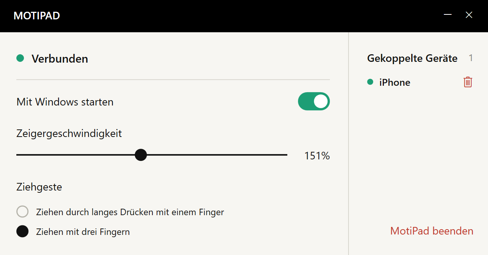

WENIGER PLATZ
Kein Platz für die Maus?
Deine Finger haben noch Raum.
Du brauchst keine freie Fläche für Mausbewegungen. Streiche über dein iPhone, um den Mauszeiger am Computer zu bewegen.
Weniger Platz. Ein Zubehör weniger.
Vertraute Gesten, direkt auf deinem iPhone.


Ein Cafétisch, ein provisorischer Arbeitsplatz oder ein Tag mit leichtem Gepäck. Dein Touchpad steckt im iPhone, das du ohnehin dabeihast.
Du brauchst keine freie Fläche für Mausbewegungen. Streiche über dein iPhone, um den Mauszeiger am Computer zu bewegen.
Maus oder Touchpad lieber zu Hause lassen? Gib deinem iPhone eine weitere Aufgabe.
Bewegen, tippen und mit zwei Fingern scrollen.
Eine einfache Touchfläche für volle Konzentration.
Du ziehst eine Datei über einen großen Bildschirm und erreichst den Rand des iPhones? Hebe den Finger kurz an, setze ihn wieder auf und ziehe weiter.
Kopple deine häufig genutzten Computer und wähle im Menü auf dem iPhone, welchen du steuern möchtest. Arbeitsplatz wechseln und weitermachen.
Füge deine Computer zur Kopplungsliste hinzu.
Wechsle den gesteuerten Computer im Menü.
Steuere jeweils einen Computer.
Öffne MotiPad und nutze das Display zum Bewegen, Scrollen und Ziehen.
Installiere den Empfänger und kopple die Geräte im selben lokalen Netzwerk. Zeigergeschwindigkeit und Ziehgesten stellst du am Computer ein.
Laden Sie den Windows-Empfänger herunter und installieren Sie ihn, um MotiPad auf Ihrem iPhone zu verwenden. Der App-Store-Link folgt nach der Veröffentlichung.
Schreib uns bei Fragen, Problemen oder Produktvorschlägen.
eziojobs01@gmail.com